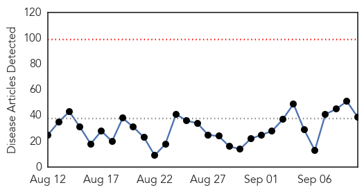

West Nile Virus
30-Day Web Trend
1 alerts, 0 warnings

30-Day Twitter Trend
0 alerts, 0 warnings

Article Locations

Article Confidences
Top Articles:
- 0.960
- Yakima Health District Finds 5 Cases of Chikungunya in Yakima Co - NBC Right Now/KNDO/KNDU Tri-Cities, Yakima, WA
- 0.901
- 2 Bridgeport resident test positive for West Nile virus
- 0.808
- West Nile virus found in DeKalb County
- 0.710
- St. Clair County reports West Nile virus death
- 0.549
- Howard Beach man contracts West Nile
Top Tweets:
-
No tweets found for Sep 10, 2015
Ebola
30-Day Web Trend
0 alerts, 0 warnings

30-Day Twitter Trend
0 alerts, 0 warnings

Article Locations

Article Confidences

Top Articles:
- 1.000
- Cautious optimism as Ebola outbreak cases stay low
- 1.000
- Ebola Virus Disease — Sierra Leone and Guinea, August 2015
- 1.000
- Bend native helps contain ebola in West Africa; Amanda MacGurn one of hundreds deployed by CDC
- 0.999
- Ebola-hit African countries declare states of emergency
- 0.997
- Are Infectious Disease Outbreak Films Scientifically Accurate? The Truth About Hollywood's Depiction Of World Destruction
- 0.996
- New Ebola case identified in Sierra Leone
- 0.994
- Guinea passes one week with no new Ebola case: WHO
- 0.994
- Thanks Obama! Ebola down from 100 to 10 new cases a day in Liberia
- 0.994
- DOH assures Ebola Reston in PH 'kind' to humans
- 0.993
- Over 7,000 monkeys in 3 facilities monitored
- 0.992
- Ebola has traveled from Guinea to NY, but the city is ready
- 0.991
- Monkey ebola: Philippines suspends macaque exports
- 0.990
- Gov to invest more in disease control « Awoko Newspaper
- 0.987
- Magufuli threatens to give away idle sisal farms
- 0.987
- New cheaper, sensitive Ebola test to help curb disease spread
- 0.986
- Philippines bans monkey exports over Ebola deaths
- 0.984
- New nanozyme test can help curb Ebola spread in western Africa
- 0.983
- Ebola quarantines remain after outbreak fades, leaving travelers to negotiate web of rules
- 0.983
- Philippines suspends monkey exports after Ebola deaths
- 0.982
- New cheaper, sensitive Ebola test to help curb disease spread
- 0.969
- Sex and masturbation may hamper Ebola eradication efforts
- 0.968
- Isolated Flare-Ups of Ebola in West Africa Suggest Virus Might Be Transmissible In Semen For Much Longer Than Previously Believed
- 0.949
- How to Eradicate Political Panic
- 0.923
- Parasite treatment failure linked to virus
- 0.905
- Top medical adviser talks MERS, drug resistance-INSIDE Korea JoongAng Daily
- 0.856
- Ghana, Business Advice, Jobs, News, Business Directory, Real Estate, Finance, Forms, Auto
- 0.846
- NY Daily News: North Korea says it's discovered cure for cancer
- 0.821
- Belgian national airline increases flights to west Africa
- 0.781
- African scientists funded to seek cures for AIDS, Ebola at home
- 0.781
- Sierra Leone News: We must not lose focus on the ebola fight-CEO Palo Conteh « Awoko Newspaper
- 0.756
- Government restricts movement of monkeys for at least 3 years
- 0.746
- Frequently asked questions on migration and health
- 0.731
- Philippines suspends monkey exports after Ebola deaths
- 0.639
- IMF boss visits Liberia
- 0.631
- Government bans export of monkeys for four years
- 0.575
- 100,000 people die of snakebites each year
- 0.572
- More heartbreak for Ebola survivor after baby boy dies - Los Angeles Sentinel
- 0.571
- Seoul: Mission welcomes official delegation from Sierra Leone
- 0.524
- Sierra Leone: UNICEF Sierra Leone Ebola Situation Report, 2 September 2015
Top Tweets:
- 0.966
- UN health agency warns Ebola outbreak in West Africa has 'a very nasty sting ... - UN News Centre http://t.co/UTzv0g2IGQ ebola EVD
- 0.805
- Communication and Communicable Disease Control: Lessons From Ebola Virus Disease lessonslearned http://t.co/LrqvYZhSLm
- 0.736
- Super-sensitive Ebola test could curb disease spread - Times of India http://t.co/YX17do1SRZ ebola EVD
- 0.666
- DOH: 11 monkeys dead 1 positive for Ebola - ABS CBN News http://t.co/a3SMKnxXtK ebola EVD
- 0.658
- warns Ebola outbreak in West Africa has ‘a very nasty sting in its tail’: http://t.co/48vA5J2sUe
- 0.598
- Danny Glover to star in movie about people who stopped Ebola from exploding in ... - U.S. News & W... http://t.co/pTtwtNMNEh ebola EVD
- 0.584
- Philippines suspends monkey exports after Ebola deaths - Yahoo News http://t.co/V0uqDz4do0 ebola EVD
- 0.584
- Philippines suspends monkey exports after Ebola deaths - Yahoo News http://t.co/KhRIjDIrtK ebola EVD
- 0.581
- RT: Mungwari: Ebola is a 19710 disease no one should die of it IamSA